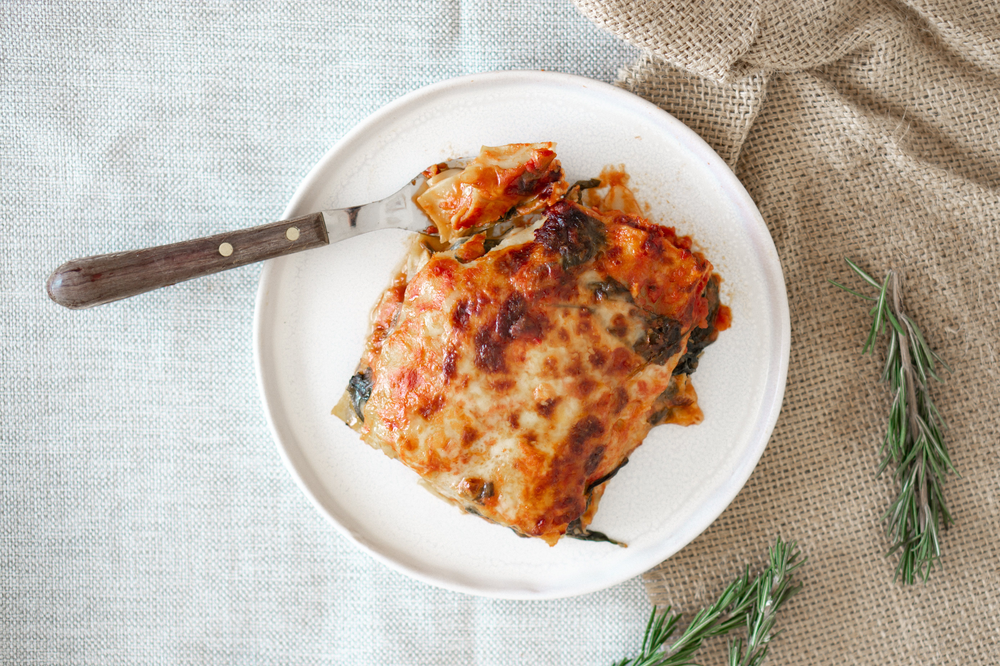

Lasagne

Description
A classic, layered pasta dish made with lasagne pasta sheets, a tomoato/meat sauce, a white/béchamel sauce and cheese.
Ingredients
For the meat sauce
- 500g Minced Beef
- 400g Chopped Tomatoes
- 2 Tbsp Tomatoe Pureé
- 200g Chopped Onions
- 200g Chopped Peppers
- 2 Tbsp Italian herbs seasoning
- 2 Tsp Paprika
- 2 Tsp Garlic Powder
- Salt & Pepper to Taste
For the white sauce
- 500ml milk
- 2 Tbsp Butter/Spread
- 3 Tbsp Plain Flour
Other
Steps
Cook the meat sauce
- Fry off the peppers and onions till browned.
- Add the mince and fry till browned.
- Add the chopped tomatoes and pureé and stir to combine.
- Add the herbs and spices and flavour with the salt and pepper.
Cook the white sauce
- Add the milk and butter to a pan then heat.
- Once the butter has melted sift in the flour and mixed vigourously with a whisk to avoid lumps.
- Keep stirring on the heat until the mixture thickens.
Construction
- Add three lasagne sheets to a casserole dish and then add a layer of meat sauce followed by a layer of white sauce.
- Repeat this two more times and top with the mozzarella cheese.
- Put the dish in the over and cook at 200°C for 25-30 mins till the cheese has browned and the pasta sheets are soft.